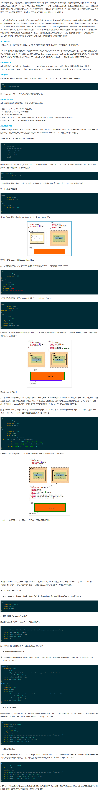

摘自：https://www.w3cplus.com/css3/how-to-use-css3-calc-function.html
https://www.w3cplus.com/preprocessor/create-css-grid-using-calc.html alc() 函数可以嵌套。在函数里边，会被视为简单的括号表达式，如下例所示。
.foo {
width: calc( 100% / calc(100px * 2) );
}
/* 函数的计算值如下所示： */
.foo {
width: calc( 100% / (100px * 2) );
}
.foo {
--widthA: 100px;
--widthB: calc(var(--widthA) / 2);
--widthC: calc(var(--widthB) / 2);
width: var(--widthC);
}
在所有的变量都被展开后, widthC 的值就会变成 calc( calc( 100px / 2) / 2)，然后当它被赋值给 .foo 的 width属性 时，所有内部的这些calc()（无论嵌套的有多深）都将会直接被“拍”成一个括号（原文：be flattened to just parentheses），所以这个 width属性 的值就直接相当于 calc( ( 100px / 2) / 2)了，或者说就变成25px了。 简而言之：一个 calc() 里面的 calc() 就仅仅相当于是一个括号。
使用 calc() 给我们提供了另一个垂直居中元素的解决方案。如果我们知道元素的尺寸，仅仅通过 top 与 left 属性便能实现.
/* .ele的宽度和高度为300px */
.ele{
position: absolute
top: calc(50% - 150px);
left: calc(50% - 150px);
}
使用 calc() 可以取得与box-sizing:border-box相同的效果。
.ele{
width: calc(100% - (20px + 2px) * 2);
height: calc(100% - (20px + 2px) * 2);
border: 2px solid #ccc;
padding: 10px 20px;
}